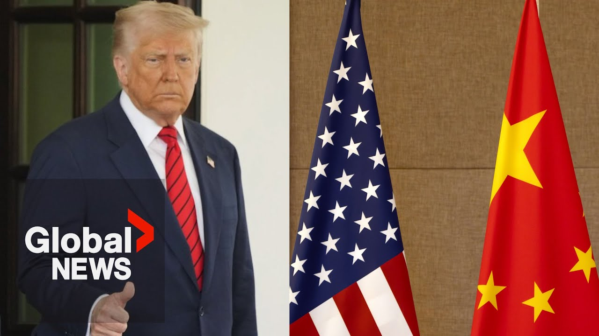

【特朗普宣称美中贸易谈判"全面重启"】
Summary: Financial experts worry the unresolved US-China trade war started by Trump still poses global recession risks.
摘要： 金融专家担忧特朗普发起的美中未解决贸易战仍存在引发全球衰退的风险。

⏱️ Estimated Reading Time: 1 min
Reggie Chini, Global News, Washington.
两国贸易官员本周末在瑞士进行了初步合作性会谈。